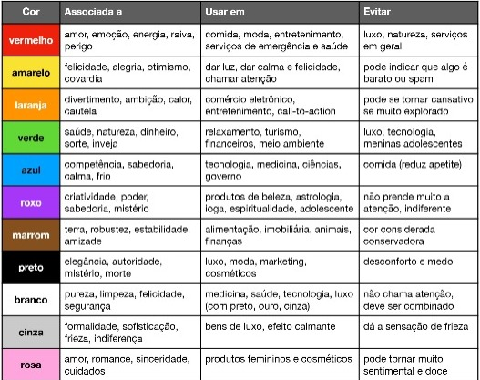
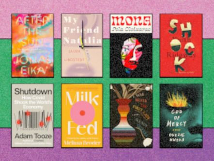
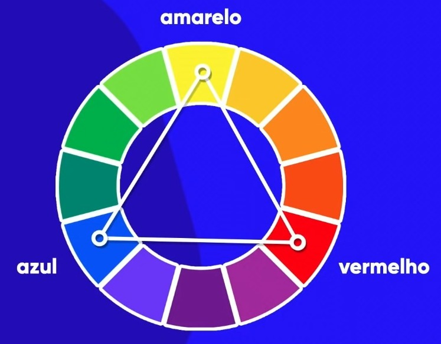
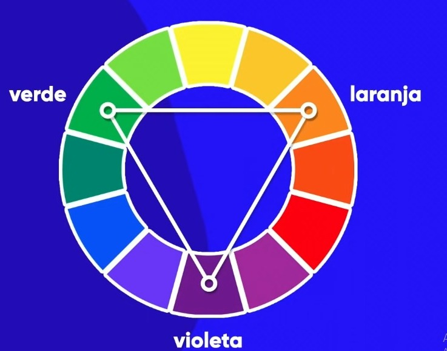
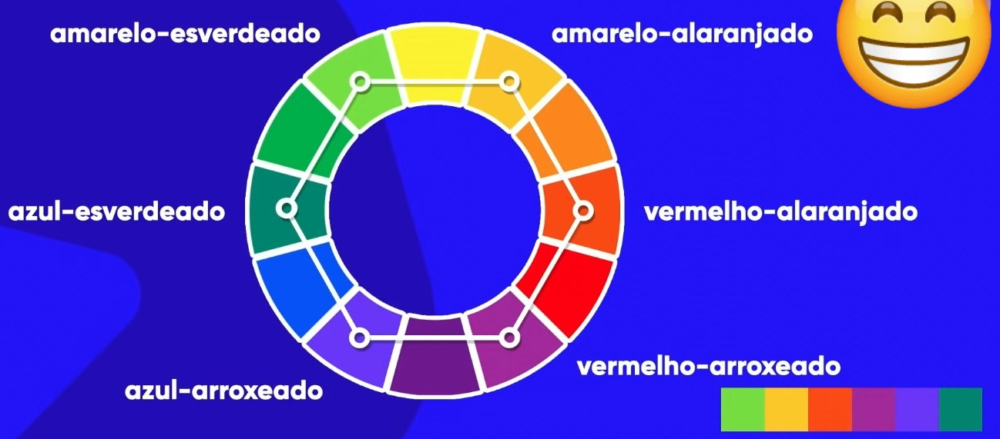
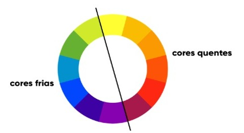
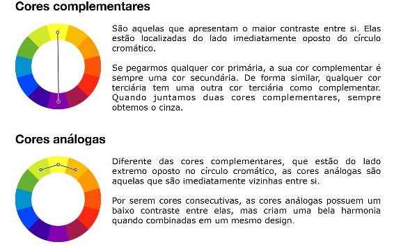
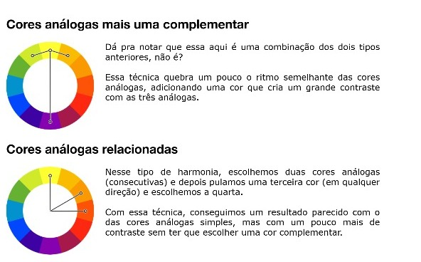
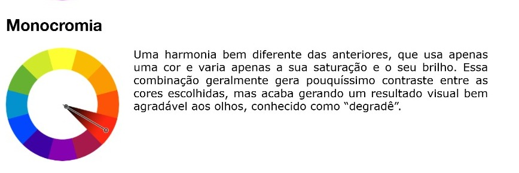

É certo que você escolheu esse livro pela capa,
mas o que fez que você escolhesse justamente esse livro?
Sua escolha está relacionada com as cores e combinações
como mostrado na tabela acima, além de sua Simetria!






